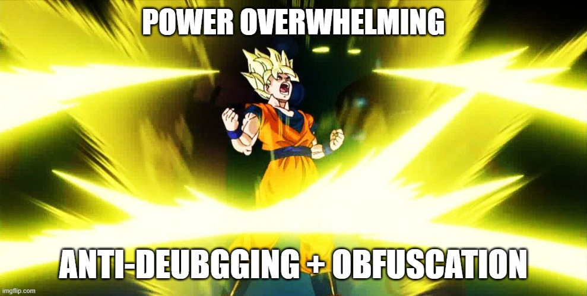

[Research] Anti-Debugging Part 3(EN)
Hello, this is OUYA77! 🙂
Last time, I mentioned that I might cover obfuscation on the blog if the opportunity came up — and well, here we are with Part 3!
In Part 1, we explored debugging and anti-debugging techniques. Then in Part 2, we looked at ways to bypass anti-debugging, which acts like a “trap card” trying to block certain actions.
(If you haven’t checked them out yet, here’s a quick link 👇 haha
Check out the previous parts:
Since this series has been a bit of long journey, it’s totally understandable if some details have slipped your mind.
Just in case, I even prepared a little cartoon (!) to sum things up. I swear there was no my hope while making it. It’s also a total secret that I had to call in an expert for help with the framing because it turned out way harder than I thought…
Anti-Debugging Part Summary


As you saw in the cartoon, anti-debugging techniques were developed to block debugging — and bypassing techniques were invented to counter them. Through Part 1 and Part 2, we saw that anti-debugging has its limits: ultimately, a program must be loaded into memory to run, and the final binary must be delivered to the user. This means that if a user analyzes the binary and understands the anti-debugging logic, they can patch it or find ways around it.
That’s when the legendary Chef Gordon Ramsay shows up and yells,
“You need to hide these ingredients (anti-debugging logic) better!” 🔥👨🍳
— And thus, obfuscation must be applied.
In Part 2…
???: So why not just hide it? / 000: How!!

When anti-debugging is combined with obfuscation, it becomes extremely difficult to identify which parts of a program contain anti-debugging logic, making the analysis process even more challenging. That’s why in Part 3, we will take a deep dive into this fascinating technique called obfuscation!
1. Obfuscation
1.1 Introduction
- Obfuscation is a technique that intentionally makes a program’s code difficult to read.
Wikipedia defines it as:
“In software development, obfuscation is the practice of creating source or machine code that is intentionally difficult for humans or computers to understand.”
Obfuscation goes beyond simply making code less readable — it is used to hinder reverse engineering, debugging, and static analysis, and serves various purposes such as intellectual property protection, security enhancement, and evading malware analysis.
1.2 Purpose
Obfuscation achieves the following defensive goals without changing the actual behavior of a program:
- Reduced readability: Hides the logical structure and meaning of the code to obstruct understanding.
- Increased structural complexity: Introduces unnecessary operations, nonlinear flows, random-based conditions, etc.
- Evasion of pattern detection: Tricks signature-based detection tools or causes false positives/negatives.
In short, if an analyst looks at the program and thinks,
“Ugh… this is going to be a headache ;;”
— then the obfuscation has already succeeded to some degree.
1.3 Types of Obfuscation
Obfuscation can largely be divided into two categories:
- Source Code Obfuscation
- Target: High-level source code (Java, JavaScript, Python, etc.)
- Applied at: Before compilation
- Purpose: To secure internal code and protect flow when partially disclosing code to outsourcing partners or clients
Source code obfuscation is often used when a company needs to provide part of its code to third parties, ensuring that the overall structure or algorithms are not easily understood. Common techniques include renaming identifiers, rearranging code blocks, control flow obfuscation, and string encoding.
- Binary Obfuscation
- Target: Compiled executables (C, C++, Go, etc.)
- Applied at: During or after compilation
- Purpose: Product protection, algorithm safeguarding, crack/reverse engineering prevention
Binary obfuscation is crucial for protecting actual distributed products. Since most commercial software is distributed in binary form — containing valuable algorithms, licensing logic, and authentication mechanisms — protecting it is essential. Otherwise, attackers or even customers could reverse engineer or crack the software.
Technically, malware is also a kind of “product”… and yes, binary obfuscation is heavily used in malware as well.
Binary obfuscation aims to disrupt static analysis tools like IDA and Ghidra, confuse debugging attempts, and in some cases, ensure that the code is only decrypted during execution. Common techniques include control flow flattening, string encryption, inserting junk code, name mangling, and indirect jumps/calls.
1.4 Focus on Binary Obfuscation
In this part, we will especially focus on binary obfuscation. Why is it so important? Simple: Because most of the programs we use are ultimately delivered as binaries, containing the company’s key know-how, algorithms, licensing mechanisms, and more. Without proper protection, it can lead not just to technical attacks like cracking and reverse engineering, but also serious business damage like illegal redistribution and intellectual property theft. That’s why we need anti-reversing techniques — and that’s what we have been exploring since Part 1.
If anti-debugging mainly disrupts dynamic analysis (trying to observe the program at runtime),
then obfuscation focuses on obstructing static analysis (analyzing the code without running it).
When both techniques are combined, the analyst is essentially facing a near-invincible defense system.

(Though, even an “invincible shield” can meet an “unstoppable spear” someday…)
2. The Three Pillars of Binary Obfuscation
Binary obfuscation is generally classified into the following three categories.
(Some parts will be covered briefly.)
2.1 Structural Obfuscation
Obfuscation that twists the structure of the code’s control flow itself, making analysis much harder.
This category mainly targets static analysis tools that attempt to understand the program at the function or block level, making it difficult to grasp the overall structure.
Control Flow Flattening

ref. https://gosecure.github.io/presentations/2020-05-15-advanced-binary-analysis/
- Originally, logical flows like
if,while, andswitchare flattened into a singledispatcherloop. The next block to execute is determined based on a state variable.- As a result, the control flow is obfuscated into a non-intuitive form, neutralizing the control flow tree analysis of static tools.
- We’ll take a closer look at this later with an example from Obfuscator-LLVM (OLLVM)!
- Originally, logical flows like
- Junk / Dead Code Insertion
- Inserts meaningless operations (Junk Code) or never-executed code (Dead Code) into the program.
- Typical examples:
- No-op operations (
x = x;,add eax, 0;) - Unreachable branches (
if (false) { ... })
- No-op operations (
- Indirect Branching / Calling
- Jumps or calls are made through calculated addresses (e.g.,
jmp eax,call [ecx+0x10]). - This makes tracing the code flow extremely difficult (especially for API resolution).
- Jumps or calls are made through calculated addresses (e.g.,
- Opaque Predicate
- Branches are inserted with conditions that are always true/false (e.g.,
if ((x*x) >= 0)). - Harmless at runtime but significantly obstruct static flow analysis.
- Branches are inserted with conditions that are always true/false (e.g.,
- Important Note:
- Compiler optimization options like
O2,O3may eliminate meaningless code during build. - Therefore, it’s critical to disable optimization options or use runtime-dependent variables to prevent removal during obfuscation.
- Compiler optimization options like
- Effect:
- Analysts are forced to wade through unnecessary loops and branches, leading to psychological exhaustion. As shown below, inserting just a few dummy codes can make the control flow graph dramatically more complex.

🔍 Structural obfuscation mainly aims to neutralize CFG (Control Flow Graph) analysis and flow tracking.
2.2 Data Obfuscation
Obfuscation that hides or alters data to make it difficult to infer its meaning.
This category focuses on removing or hiding valuable clues such as strings, constants, and API names.
- String Encryption
- Critical strings are encrypted and only decrypted at runtime.
- Static analysis won’t reveal strings like
"CreateProcess"anymore.
- Constant Encoding
- Constant values are represented indirectly (e.g.,
1337→1000 + 337). - This complicates understanding the program’s purpose and logic during decompilation.
- Constant values are represented indirectly (e.g.,
- API Call Obfuscation/ Import Hiding
- API names are hidden using hashing or encryption, loaded dynamically via
LoadLibraryandGetProcAddress. - Completely neutralizes IAT-based automatic analysis.
- API names are hidden using hashing or encryption, loaded dynamically via
🔍 Data obfuscation prevents analysts and tools from extracting meaningful information (identifiers, strings, APIs).
2.3 Algorithm Obfuscation
Obfuscation that makes the actual functionality and logic of the program harder to understand.
This category twists the behavior itself, making it difficult to understand “what” the program actually does, even after disassembling it.
Name Mangling & Symbol Stripping
- Debugging symbols are removed, and function/variable names are replaced with random strings.
- This makes understanding the overall logic and functionality much harder.
Below is an example from Hack The Drone 2024 (Final) where LFSR Galois algorithm was used for packet encoding.

As shown, original function and parameter names reveal a lot about the algorithm.

However, with name mangling applied, it becomes much harder to quickly figure out what the algorithm does.
- (Although nowadays, tools like GPT can deduce the logic pretty quickly…) 😅
- Self-Modifying Code
- The program modifies its own code during execution.
- This makes static analysis practically impossible.
- Virtualization Obfuscation
- A custom virtual ISA (instruction set architecture) is created, and the original code is transformed into bytecode.
- Without reverse-engineering the VM interpreter, understanding the logic is nearly impossible.
🔍 Algorithm obfuscation makes it extremely difficult to understand what the program actually does.
3. Hands-on with Obfuscator-LLVM
OLLVM (Obfuscator-LLVM) is an obfuscation-enhanced version of the open-source compiler framework LLVM. While LLVM was originally designed to generate “clean” and optimized code, researchers noticed how flexible its architecture was — and decided to extend it by adding heavy-duty code obfuscation capabilities. That’s how OLLVM was born.
OLLVM automatically transforms code during the compilation process, by inserting dedicated obfuscation passes. Thanks to this, developers don’t need to manually modify their source code — they just need to compile it differently to produce heavily obfuscated binaries.
3.1 How to Build Clang for OLLVM
https://github.com/obfuscator-llvm/obfuscator/wiki/Installation
$ git clone -b llvm-4.0 https://github.com/obfuscator-llvm/obfuscator.git
$ mkdir build && cd build
$ cmake -DCMAKE_BUILD_TYPE=Release ../obfuscator/
$ make -j7In my case, I encountered a few errors during the build process, so I had to patch the source code manually. If you run into similar issues, check your build logs and troubleshoot accordingly.
Here are the fixes I made:
In obfuscator/tools/clang/lib/CodeGen/CGOpenMPRuntime.cpp (lines 6275, 6321, 6400):
error:lambda parameter ‘CGF’ previously declared as a capture
→ Simply remove the redundant &CFG capture.
auto &&BeginThenGen = [&D, &CGF, Device, &Info, &CodeGen, &NoPrivAction](...)
↓
auto &&BeginThenGen = [&D, Device, &Info, &CodeGen, &NoPrivAction](...)- In
obfuscator/include/llvm/ExecutionEngine/Orc/OrcRemoteTargetClient.h(line 696):
error: cannot convert
→ Change the return type from char to uint8_t.
Expected<std::vector<char>> readMem(...) { ... }
↓
Expected<std::vector<uint8_t>> readMem(...) { ... }

If everything goes well, you should see the custom OLLVM-enabled clang binary built successfully!
3.2 How to Use OLLVM
The easiest way to use Obfuscator-LLVM is to pass specific flags to the LLVM backend via Clang using the -mllvm option.
The main available flags are:
https://github.com/obfuscator-llvm/obfuscator/wiki/Features
fla: Control Flow Flatteningsub: Instruction Substitutionbcf: Bogus Control Flow
If you want to apply obfuscation selectively to specific functions, you can also use function annotations.
3.3 Practice
Let’s start with a simple program:
// flatten_example.c
#include <stdio.h>
int secret_function(int x) {
if (x > 0) {
return x * 2;
} else {
return x - 2;
}
}
int main() {
int value = 5;
int result = secret_function(value);
printf("Result: %d\n", result);
return 0;
}First, compile it normally and then compile it with obfuscation enabled:
$ clang flatten_example.c -o flatten_example_norm
$ path_to_the/build/bin/clang -mllvm -fla flatten_example.c -o flatten_example_obfNow, let’s analyze both binaries using IDA.
On the left is flatten_example_norm, and on the right is flatten_example_obf .
Here’s the disassembled secret_function:

And the control flow graph (CFG) of secret_function:

You can already see a stark difference — even though the original code was simple!
Of course, despite all the added complexity, the execution result remains exactly the same:

4. Conclusion
Limitations
Of course, obfuscation also comes with clear limitations.
- Performance Degradation: The insertion of unnecessary logic and complex branching during obfuscation can significantly reduce program performance.
- Counterattack by Evolving Tools: Static analyzers, deobfuscators, and other analysis tools continue to advance, allowing certain obfuscation techniques to be bypassed relatively easily.
- Legal and Ethical Issues: Applying excessive obfuscation to commercial software can undermine user trust, and in some cases, lead to legal disputes.
Significance
As we have seen so far, obfuscation techniques can be broadly categorized into Structural, Data, and Algorithmic aspects based on their working mechanisms. However, in real-world software analysis, these categories are not isolated. In practice, all three aspects are often combined, and furthermore, numerous variants and modifications—along with entirely new ideas—continue to emerge, making analysis even more complex.
For example, let’s briefly look at the obfuscation techniques used by DJI, a commercial drone company well-known for its heavy obfuscation.
- Structural Obfuscation: Splitting eight DEX files into 128KB chunks and encrypting each chunk with AES-256.
- Data Obfuscation: Generating an XOR-based key by combining the string
com.dji.industry.pilotwith hardcoded constants. - Algorithmic Obfuscation: Redirecting JNI calls through a three-stage trampoline function before reaching the actual native function.
Modern obfuscation technologies no longer rely on single-layer techniques. Instead, they adopt multi-layered, modular defense systems, incorporating new variants every year to complicate analysis even further. Some experimental approaches are also emerging, such as using AI-generated fake code patterns or leveraging quantum cryptography for key exchanges—highlighting how obfuscation evolves alongside technological advancement.
As we’ve repeatedly discussed in Parts 1, 2, and 3:
“Every protection layer is merely a device to buy time — it can never guarantee absolute safety.”
– Quarkslab Research Team
Obfuscation and anti-debugging techniques are ultimately part of the ongoing battle to protect code. In the endless tug-of-war between reverse engineers and developers, technology continues to evolve—and through that struggle, the entire field of security moves forward. Obfuscation today is not only crucial for legitimate software protection but also actively used in malware to evade detection and delay analysis. It has become a fundamental technique on both sides of the attack and defense landscape.
Obfuscation is a means to delay attacks and buy time for defense, but no shield is ever perfect. Analysts will persistently trace the flow and improve their tools, while developers will devise new obfuscation techniques to reinforce their defenses.
This battle will never end.
Because as technology evolves, so too will the methods of attack and defense. Rather than seeing obfuscation as merely an obstacle, we should recognize it as an essential part of the evolutionary process toward a more secure environment. Even amid the endless clash of spear and shield, our goal remains the same.

“The game goes on. And for our own reasons, we each dive into this never-ending game.”
Reference
리버싱 핵심 원리: 악성 코드 분석가의 리버싱 이야기(저자 이승원)
https://m.blog.naver.com/choijo2/60196192627
http://en.wikipedia.org/wiki/Obfuscation_(software))
https://blog.quarkslab.com/dji-the-art-of-obfuscation.html
https://gosecure.github.io/presentations/2020-05-15-advanced-binary-analysis/

본 글은 CC BY-SA 4.0 라이선스로 배포됩니다. 공유 또는 변경 시 반드시 출처를 남겨주시기 바랍니다.